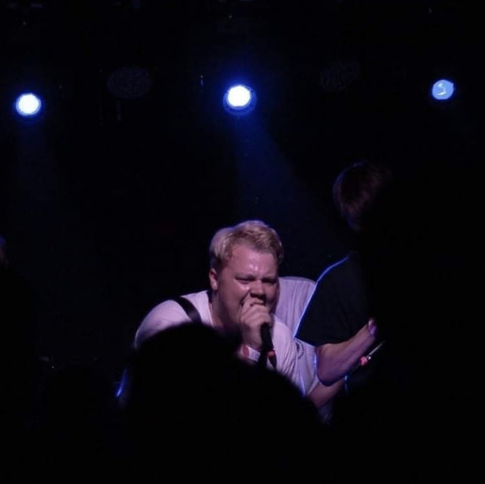
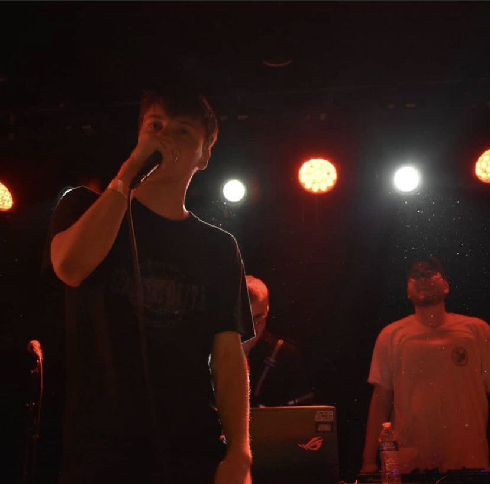

Grupės nariai
Atwood
Bluknight
Chris Wright
Cloud Mac
Miles Powers
Thiago
 Whyandotte
WhyandotteCemetery Drive yra interneto amžiaus produktas. Grupė susiformavo 2018 metais, o ją sudaro nariai iš visokių pasaulio šalių.
Grupė maišo didelę energiją turinčio pankų roko muzikos stilių su hip-hopo stiliumi ir ritmika. Kadangi jie idėjų ieškojo ir 2000-tųjų alternatyvaus roko muzikiniuose ratuose, grupės įkūrėjui Cloud Mac gimė mintis pavadinti šį projektą pagal kitos grupės My Chemical Romance vieną iš dainų "Cemetery Drive".
Nuo Sao Paulo gatvių iki Romos, nuo centrinio Detroito iki ramių Jungtinės Karalystės kaimų gatvių, Cemetery Drive sudaro labai įvairūs žmonės. Didžioji dauguma grupės narių susitiko interneto platybėse, žaisdami vaizdo žaidimus bei kalbėdamiesi nišinėse platformų Twitter ir Soundcloud muzikos skiltyse. Nors jie visi gyveno labai skirtingus gyvenimus su skirtingomis problemomis, visus juos apjungė vienintelė - izoliacija. Buvimas toli vienas nuo kito apjungė juos kartu.
Noras tobulėti ir parodyti pasauliui savo kūrybą bei milžiškas kitoniškumas, atsiradęs dėl jų visų skirtingų kultūrų, leidžia visam pasauliui susipažinti su jų kuriama muzika.
Whyandotte
Socialinės medijos
Instagram @staydeadboys
Twitter @staydeadboys
Soundcloud @CEMETERYDRIVE